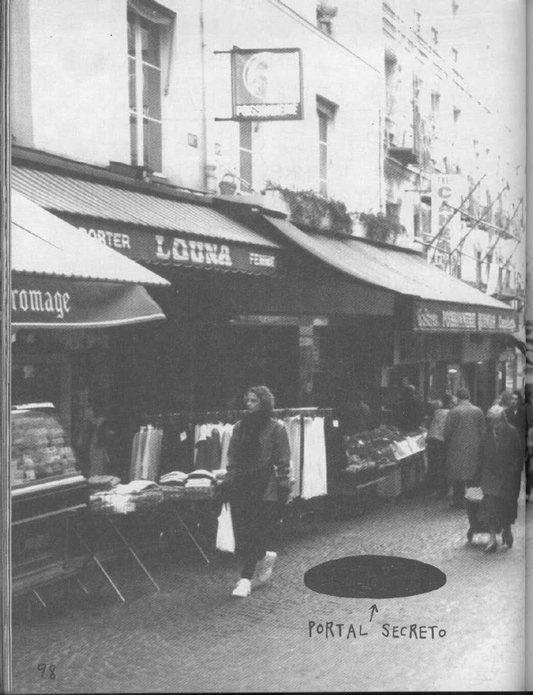
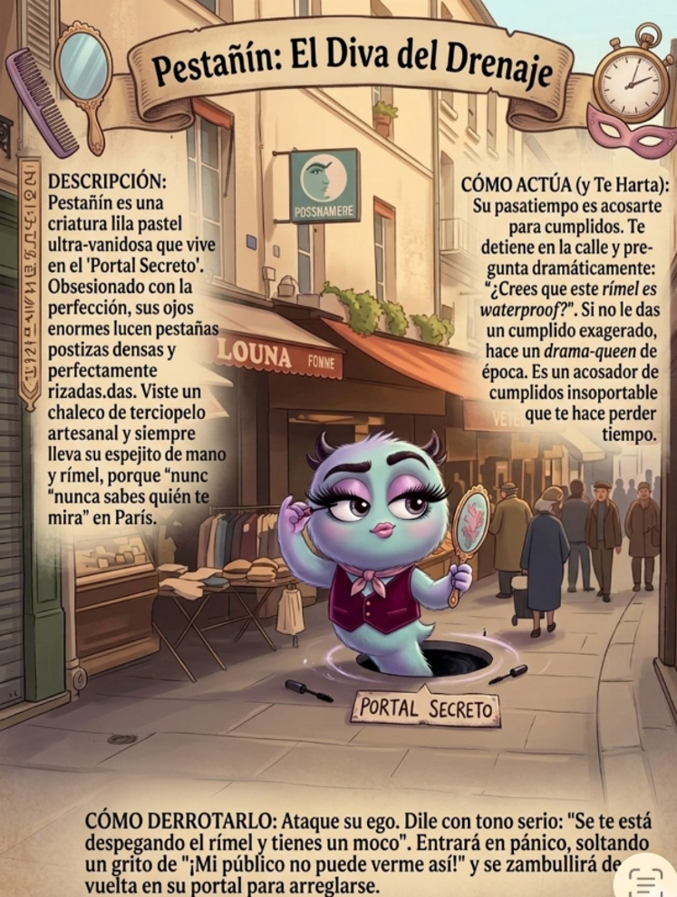
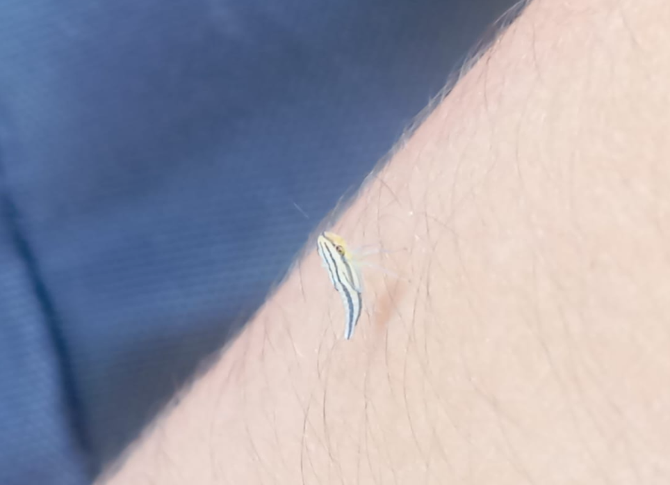
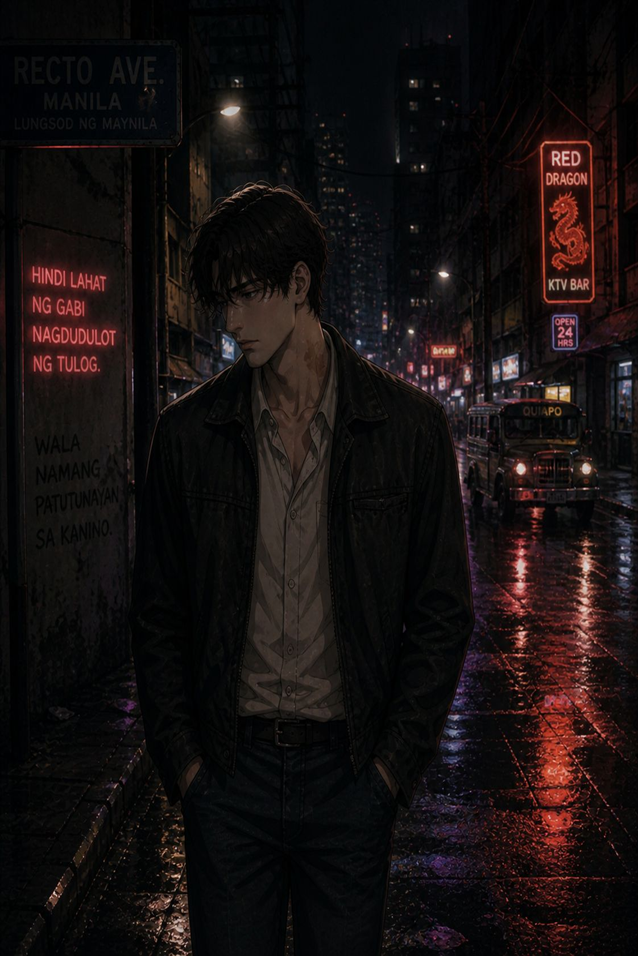

El hueco del olvido
Una calle común se abre como un abismo para guardar aquello que la ciudad decidió olvidar.
Leer entradaBlog literario con cuentos, personajes, monstruos domésticos e imágenes extrañas creadas durante el curso.
Este espacio reúne los productos finales seleccionados del taller. Se dejaron por fuera instrucciones, ejemplos de clase y preguntas guía, para publicar solo los textos creados y las imágenes que acompañan cada ejercicio.

Una calle común se abre como un abismo para guardar aquello que la ciudad decidió olvidar.
Leer entrada
Pestañín y Pospón aparecen como criaturas que representan manías, distracción y pérdida de tiempo.
Leer entradaUn relato nacido de cuatro palabras: furia, desobediencia, ternura y lujuria.
Leer entrada
Una reflexión breve sobre un insecto diminuto que aparece en medio del ruido cotidiano.
Leer entrada
Perfil de un personaje reservado, intenso y atrapado entre la necesidad de ser alguien y el miedo a no ser diferente.
Leer entradaDylan y Kyra se encuentran en una cafetería mientras una libreta negra guarda un secreto peligroso.
Leer entradaUn ejercicio narrativo creado a partir de una premisa fuerte y una estructura de planteamiento, nudo, clímax y desenlace.
Leer entradaUna noche sin luz, una cámara de seguridad, un bebé dormido y algo que comienza a salir de debajo de la cuna.
Leer entrada